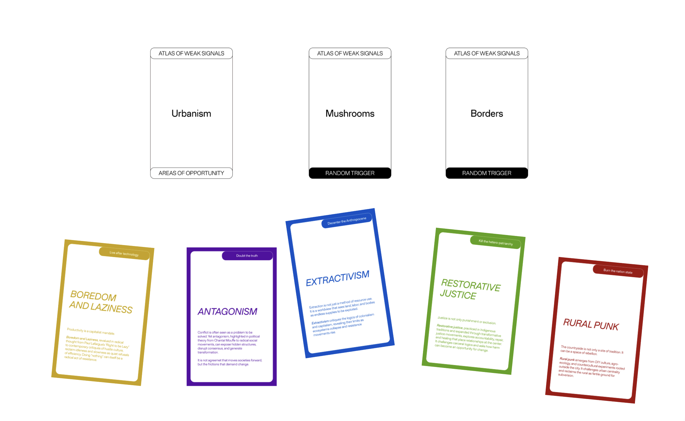

Research, Scenario Building & Narrative Development
Outcome
Speculative weak signal & narrative: “Swarming Technobiome”
Reading Futures Through Weak Signals
Atlas of Weak Signals
Weak signals are faint traces of possible futures: small, often overlooked phenomena that hint at shifts in technology, culture, ecology or politics before they become dominant trends. They are not predictions but invitations to pay attention — to patterns at the margins, to experimental practices, to behaviours that don’t yet “make sense” within the current system.
In the Atlas of Weak Signals we used these fragments as anchors for speculation. Each weak signal became a lens to question what kind of worlds might emerge if today’s fringe practices were scaled, normalized or pushed to an extreme. Rather than forecasting a single future, the work maps a constellation of alternative trajectories — messy, conflicting, sometimes hopeful, sometimes unsettling.
Our group explored how technological infrastructures could move from extractive, centralized control to a more distributed and interspecies logic of care. From this line of inquiry, the weak signal “Swarming Technobiome” emerged as a way to think about life after technology-as-we-know-it: not as disappearance, but as reconfiguration into something more entangled, ambient and ecological.
Swarming Technobiome — speculative visualization of an omnipresent nano(bio)tech colony maintaining infrastructures and relations.
Swarming Technobiome: Life After Technology
A weak signal imagining technology not as discrete devices, but as an ambient, swarming ecology woven into planetary maintenance and care.
Swarming Technobiome imagines a colony of nano (bio)tech being omnipresent in the maintenance and distribution of infrastructures, resources and services for the wellbeing of interpersonal and interspecies dynamics. Instead of infrastructure being hidden, centralized and owned, it becomes a shared, living layer that quietly coordinates flows, repairs damage and redistributes access where it is most needed.
This consists of an equitable system aiming for restorative justice as a proactive privilege breakdown. The technobiome continuously senses asymmetries — who carries the burden of extraction, who is excluded from care, which territories are over-served or abandoned — and responds by rebalancing. In this scenario, technology is no longer a neutral tool but an active agent in undoing inherited privileges and structural bias.
In class we translated this weak signal into a set of cards combining areas of opportunity such as Urbanism with random triggers like Mushrooms and Borders, and weak signals including Boredom and Laziness, Antagonism, Extractivism, Restorative Justice and Rural Punk. By shuffling and recombining them, we prototyped multiple futures where the technobiome becomes entangled with rural struggles, slow resistance and post-extractive forms of life.
Scenario One — Swarming Rural Punk
People in the rural create an international movement because they are sick of extractivism, they are sick of the egocentric urban people.
So they start to only plant mushrooms, they become more lazy to retaliate and the urban people realise the importance of primary sector.
Urban people start to hate mushrooms because that is the only thing you can buy and eat.

Card configuration for Scenario One: Urbanism, Mushrooms, Borders + Boredom & Laziness, Antagonism, Extractivism, Restorative Justice and Rural Punk.
In this scenario the rural movement hacks the Swarming Technobiome instead of overthrowing it. They programme the nano(bio)tech colony to prioritise local soil health, collective rest and food autonomy. The only large–scale crop that still circulates outwards is mushrooms: fast-growing, adaptable, and deeply entangled with mycelial networks below ground. Boredom and laziness become strategies of refusal — farmers slow down, automate maintenance with the technobiome and redirect surplus energy from productivity towards organising, care and celebration.
For rural communities, the technobiome becomes an invisible public service: it monitors water tables, regenerates depleted fields, alerts neighbours when help is needed and redistributes harvests through swarming, self-organised logistics. Access is not mediated by money but by participation in local assemblies and interspecies stewardship. For urban dwellers, however, the system feels like a dis-service. Supply chains that once extracted cheap calories from the countryside now return mostly one thing: endless variations of mushrooms. Supermarkets overflow with fungal products while other goods become scarce or hyper-expensive, making the dependence on the primary sector sharply visible.
What looks like a failure of service from the city’s perspective is, in fact, a deliberate reprogramming of value. Borders are no longer just geopolitical lines but thresholds in the behaviour of the technobiome: convoys headed towards speculative urban markets are slowed, diverted or dissolved, while flows within and between rural territories are accelerated. Restorative justice plays out as material inconvenience for the urban centre and as expanded possibility for the periphery. The scenario asks how far a swarming infrastructure of care could go in rebalancing power — not by serving everyone equally, but by strategically withholding, rerouting and revaluing what counts as service in the first place.